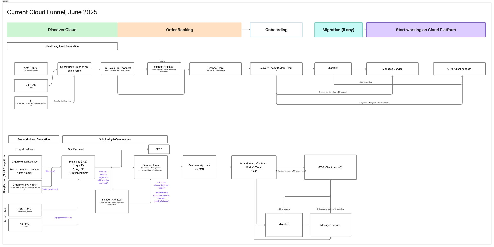
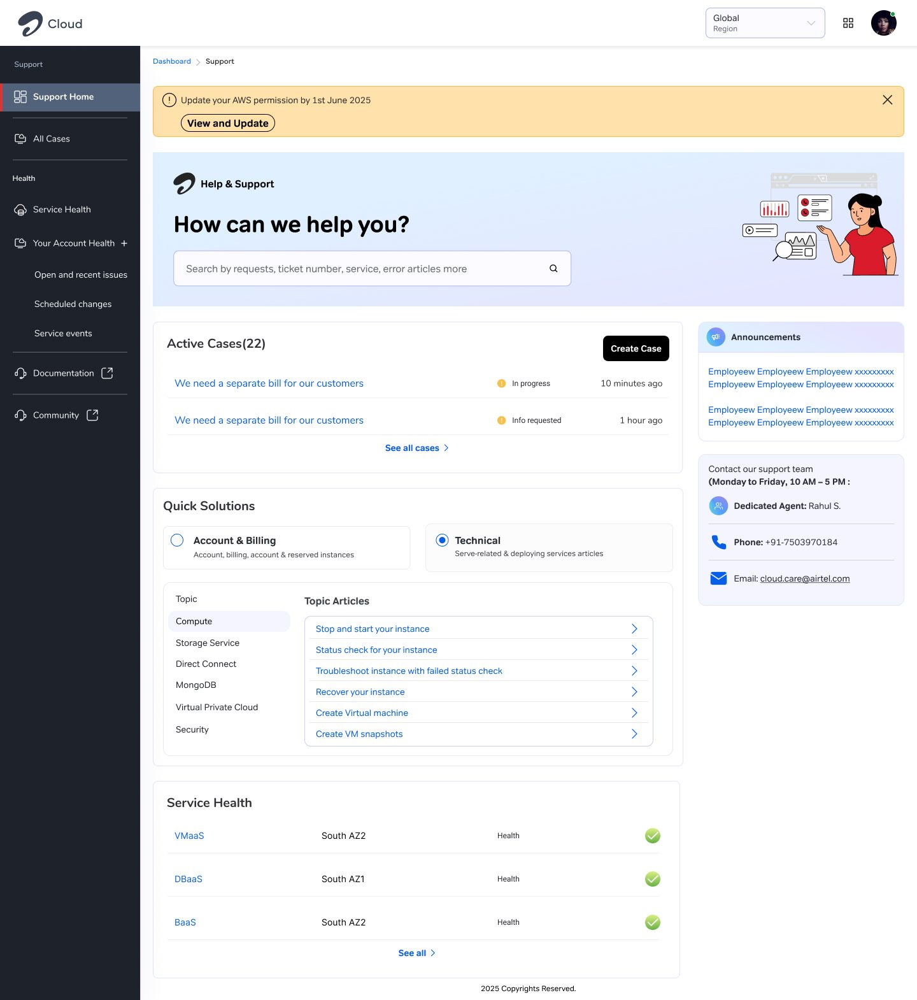
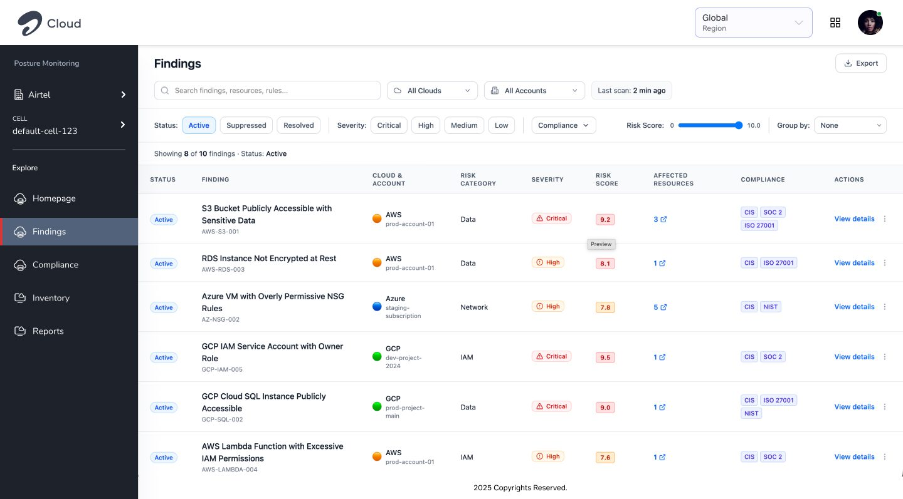

00My role & ground
I was the sole designer for Airtel Cloud, accountable end to end across the Cloud Management Platform (ACP), Assurance, KMS, CSPM, Cost Analyser and CloudFerry, with no formal authority over the engineering behind any of them.
I wasn't handed research to design from. I ran it myself (audits, competitive benchmarking, stakeholder workshops, field-level testing) and carried each finding through to a shipped or vendor-adopted design. That meant working across four very different relationships at once: an external delivery agency building the core platform, an external vendor owning a security service with no design at all, a partner team owning CSPM, and internal teams building Cost Analyser and CloudFerry independently.
01Situation
Airtel Cloud launched in August 2025 on a deliberately minimal scope: a Cloud Management Platform built by an external agency, plus a support layer (Assurance) that shipped in a knowingly broken state. Foundational tools such as Identity & Access Management and Observability didn't exist yet.
The bet was simple: launch on time, and let real client usage tell us what to build next.
02Stakes
| Measure | At launch | Target |
|---|---|---|
| Enterprise clients | 18 | 50 by 2027 |
| Cloud contract value | ₹18 Cr (~US$2M) | ₹180 Cr (~US$21M) |
My own goals tied directly to the platform experience: at least 85% usability success, at least 80% service-discovery success, and a 10% reduction in usability-driven support tickets.
03Complexity
No single team controlled the product end to end. The delivery agency owned the core platform build. A security vendor owned a critical service with a technical spec and no design. A partner team owned CSPM. Two internal teams were building Cost Analyser and CloudFerry on their own.
Every improvement had to be earned, not mandated, across four genuinely different working relationships at once.
04Research & discovery
Every thread started with structured research, with the method fitted to what each relationship needed.
Auditing the inherited platform
Ahead of go-live, I ran a formal readiness evaluation of the agency's build, testing at the field level rather than doing a walkthrough. On the "Create MongoDB" flow, for example, I typed conflicting inputs into the same field across two paths to see where validation diverged, and pasted a long garbled string into the description field to find a character limit nobody had documented.

Competitive and persona-based evaluation
For CSPM, I wrote a structured evaluation of Homepage, Findings, Compliance, Inventory and Reports against Azure Defender for Cloud and GCP Security Command Center, covering functional coverage, UX effectiveness and enterprise readiness. I mapped the product against five personas with different jobs to be done:
- Security teams need remediation priorities.
- DevOps needs plain-language vulnerability explanations.
- Compliance needs continuous, audit-ready evidence.
- Executives need business-risk framing.
- Incident responders need full-context investigation.

Mapping the business process before the UX
Before designing Assurance, I mapped the full order-to-activation lifecycle. Support turned out not to be one step but something downstream of a long pipeline, with a different owner at nearly every stage:

Stakeholder alignment as research
I asked for a working session with the backend infrastructure team to understand architectural constraints before proposing IAM- and Observability-level changes, and set up a joint session with the agency and the ServiceNow team to align both delivery teams on the new Assurance journey before development started.
A competitive deep-dive that reversed my own hypothesis
My working assumption was that the platform should unify everything: one experience, one navigation, one design language. To test it, I studied how AWS, Azure and GCP structure their consoles. Every one of them deliberately keeps modules separate, likely for reasons of permission boundaries and cognitive load.
That changed my strategy. Instead of forcing unification, I moved to a consistent experience language: shared patterns, components and interaction models across tools that stay appropriately separate. Since the agency's build couldn't be migrated within the go-to-market timeline, the work now under way is a component library that future builds can adopt directly.
- Full unification isn't what mature cloud platforms do. This finding reversed my strategy before I'd built anything on it.
- The biggest usability risk wasn't a missing feature. It was inconsistent validation and undocumented limits on the fields customers touch first.
- CSPM was functionally complete but not decision-grade. It could show everything, but couldn't tell a CISO what to fix first.
- Assurance was broken because the fulfilment process has multiple ownership handoffs that a single-system support flow could never represent honestly.
- A year in, the platform team was still assembling IAM permissions by hand. Every other request was built on a foundation that hadn't caught up.


05My intervention
Rather than treating each thread as a separate redesign request, I changed the kind of relationship I had with each one:
- Delivery agency: from reviewing finished screens to auditing the platform before go-live.
- KMS vendor: originating a full design from their technical spec, with nothing existing to react to.
- CSPM partner: repositioning what the product was for, grounded in the persona research.
- Assurance: taking full ownership and rebuilding it, starting from a written proposal built on five principles (Unified Platform, Informed Experience, Contextual Assurance, Seamless Journey, Transparent & Intuitive), with three concepts explored before committing to one.

06Key decisions
- Accepted a knowingly broken Assurance at launch to protect the go-live date, then rebuilt it properly 6–8 months later once real usage showed where to invest.
- Originated KMS's entire interaction model from the vendor's technical spec. The delivery agency built their ACP integration to my prototype.
- Reframed CSPM from a reporting tool to a decision-support tool, grounded in persona research rather than a visual refresh.
- Chose not to build Observability once IAM was identified as the real constraint, shelving a complete, demoable spec for a harder, less visible priority.
- Reversed my own initial strategy from full unification to a shared component library, rather than defending the original plan.
- Built Assurance as a self-service funnel, not a ticket form. Guided fixes and an explainer video come first; a pre-filled support form, with live assistance always available, is the last resort by design.
- Sequenced a three-phase roadmap instead of a fix list. Phase 1 went into in-house development; Phases 2 and 3 are scoped and deliberately deferred.


07From UX fixes to platform thinking
The work moved through four levels:
Field-level hygiene fixes on ACP, found through direct testing rather than review.
Assurance's cross-system case-creation journey; CloudFerry's Live/History split.
KMS's shared key-hierarchy model across dashboard, creation and audit; Cost Analyser's unified IA; one guided-resolution pattern across every Assurance entry point.
Recognising that no single tool mattered until the platform had a consistent design language and an identity foundation underneath, formalised in a three-phase roadmap.


08Influence & trade-offs
Design authority had to be earned relationship by relationship. Often the research itself, not the screens, did the persuading.
| Relationship | What I did | What resulted |
|---|---|---|
| Delivery agency | Wrote a readiness evaluation grounded in field-level testing, not opinion | Vendor acknowledged findings and re-prioritised its delivery plan |
| KMS vendor | Designed a prototype from their technical spec | Prototype adopted into the live ACP integration |
| CSPM partner | Delivered a persona-grounded competitive benchmark | Product roadmap repositioned |
| CloudFerry (internal) | Responded to an unprompted request for consistency | Given full trust over dashboard and flow design |


09Outcome
| Status | Work |
|---|---|
| Shipped | Price Calculator and service-documentation template (pre-launch); ACP hygiene fixes; rebuilt, ACP-integrated Assurance; KMS prototype adopted into the live integration |
| In progress at handover | CSPM repositioning, Cost Analyser IA rebuild, CloudFerry dashboard and flow redesign, IAM (separate case study) |
| Deliberately not built | Observability: a complete Phase 1 spec, shelved once IAM became the higher priority |
10What this taught me
I came in with no cloud experience. The project taught me how the ecosystem actually works: IaaS, PaaS and SaaS as real architectural layers, backend constraints, and the full order-to-activation lifecycle behind every "simple" support ticket. That immersion is what let me tie very different tools into one platform story.
The most important lesson was being wrong. I started confident that everything should be unified. The evidence said otherwise, and changing direction mattered more than any single screen.
Design leverage on a fragmented platform doesn't come from formal authority. It comes from being right often enough, and visibly enough, that a vendor builds to your design and a team seeks you out unprompted. The harder discipline was saying no to my own finished work and my own starting strategy. If I did it again, I'd push to sequence IAM before launch rather than discover the need a year in.
Next case studyIdentity & Access Centre →